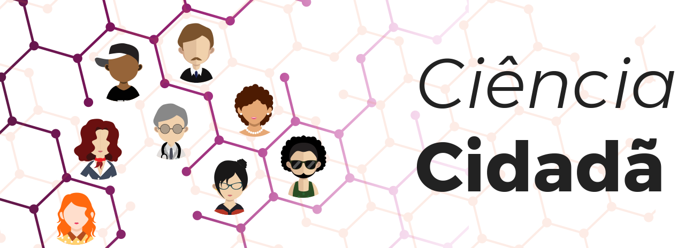

Aula 5
Ciência Cidadã
O acesso democratizado aos resultados da ciência, e o envolvimento do público nos processos de pesquisa, dá força ao movimento conhecido por Ciência Cidadã.
Com esta breve introdução você poderá compreender em que consiste a ciência cidadã e como este conceito se integra na Ciência Aberta.
Definição

Ciência cidadã é o envolvimento do público não acadêmico no processo de pesquisa científica - seja pesquisa orientada para a comunidade ou a nível global.
Os cidadãos realizam trabalho científico - geralmente trabalhando em conjunto com especialistas ou instituições científicas. Eles apóiam a coleta, análise ou descrição de dados de pesquisa e dão uma contribuição valiosa para a ciência.
O primeiro projeto documentado de Ciência Cidadã aconteceu no Natal de 1900, nos EUA, quando a National Audubon Society realizou o Christmas Bird Count. Por sua vez, o "Galaxy Zoo", com mais de 150.000 participantes que classificaram as galáxias em um ano, é provavelmente o projeto mais bem-sucedido da Ciência Cidadã.
A ciência cidadã é essencialmente um produto direto da comunicação científica de sucesso ou engajamento público. Este conceito está intimamente conectado com um dos pilares da Pesquisa e Inovação Responsáveis (RRI - Responsible Research and Innovation).
Os 10 princípios de Ciência Cidadã
A Associação Europeia de Ciência Cidadã define Ciência Cidadã como “um conceito flexível que pode ser adaptado e aplicado a diversas situações e disciplinas” e apresenta num documento director os seus 10 princípios.
1
Os projetos de ciência cidadã envolvem ativamente os cidadãos nas atividades científicas o que gera novo conhecimento e compreensão.
2
Os projetos de ciência cidadã produzem genuínos resultados científicos.
3
Tanto os cientistas como os cidadãos cientistas beneficiam da sua participação nos projetos de ciência cidadã.
4
Os cidadãos cientistas podem, caso queiram, participar em várias etapas do processo científico.
5
Os cidadãos cientistas recebem feedback do projeto.
6
A ciência cidadã é considerada como abordagem de pesquisa como qualquer outra, com limitações e enviesamentos que devem ser considerados e controlados.
7
Dados e metadados resultantes de projetos de ciência cidadã são tornados públicos e sempre que possível publicados num formato de acesso livre.
8
O contributo dos cidadãos cientistas é reconhecido publicamente nos resultados dos projetos e nas publicações.
9
Os programas de ciência cidadã são avaliados pelos seus resultados científicos, qualidade dos dados, experiência para os participantes e abrangência dos impactos sociais e políticos.
10
Os responsáveis de projetos de ciência cidadã têm em consideração questões legais e éticas relativas ao copyright, propriedade intelectual, acordos sobre partilha de dados, confidencialidade, atribuição e impacto ambiental de qualquer atividade.
Fonte: Adaptado a partir de Dez princípios da ciência cidadã
Projetos de ciência cidadã no Brasil

O SiBBr - Sistema de Informação sobre a Biodiversidade Brasileira - é o primeiro passo para o Brasil consolidar uma sólida infraestrutura nacional de dados e conteúdos em biodiversidade. É uma iniciativa do Ministério da Ciência, Tecnologia, Inovações e Comunicações (MCTIC), por meio da sua Secretaria de Políticas e Programas de Pesquisa e Desenvolvimento (SEPED), com suporte técnico do Programa das Nações Unidas para o Meio Ambiente (PNUMA) e apoio financeiro do Fundo Global para o Meio Ambiente (GEF) e agrega diversos projetos de ciência cidadã
Vídeo 6 - Guardiões da Chapada
Fonte: Junior Jurandir.